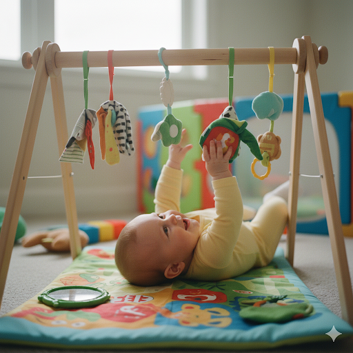

In questa pagina · 7 sezioni
- Quando arrivano: sono più preparati di quanto pensiamo
- Non conta solo quando fanno qualcosa, ma come lo vivono
- Il percorso trimestre per trimestre (senza ossessionarsi con il calendario)
- La cosa più importante da ricordare
- Quando parlare con il pediatra
- La tua presenza è il vero motore dello sviluppo
- Fonti
In breve
Le tappe dello sviluppo sono finestre ampie, non scadenze: nel primo anno i bambini passano dai riflessi del neonato al rotolare, stare seduti, gattonare o spostarsi strisciando, mettersi in piedi con appoggio e dire le prime parole, ciascuno con i suoi tempi. Se un dubbio continua a tornare, parlane con il pediatra, che controlla lo sviluppo anche durante le visite di routine.
Respira. Parliamo di tutto questo senza pressioni.
Quando arrivano: sono più preparati di quanto pensiamo
I neonati sembrano fragili, ma nascono con riflessi potenti che li aiutano a sopravvivere fin dal primo minuto: girarsi verso il tocco sulla guancia, succhiare in automatico e quella presa sorprendentemente forte attorno al tuo dito.
Anche il sobbalzo che all'inizio può spaventare è un riflesso normale. Molti movimenti automatici scompaiono nei primi mesi, ed è un buon segno: il cervello sta maturando e assume il controllo volontario.
Il pediatra controlla questi riflessi durante le visite e, con il tempo, impari a riconoscerli anche tu.
Tieni tutto sotto controllo con Raffy
Sonno, pappe, crescita e routine in un'unica app Android gratuita.

Non conta solo quando fanno qualcosa, ma come lo vivono
Lo sviluppo non è una lista da spuntare. È un processo vivo che coinvolge diverse aree collegate tra loro:
- Come si muove il tuo bambino.
- Come comunica.
- Come comprende il mondo.
- Come crea il legame con te.
Quando i bambini si sentono al sicuro, esplorano di più. Quando esplorano di più, imparano di più. E quando imparano di più, provano di più. Tu sei la loro base sicura.
Il percorso trimestre per trimestre (senza ossessionarsi con il calendario)
Da 0 a 3 mesi: imparare a stare fuori dal pancione
Questi primi mesi sono di adattamento. La vista è ancora sfocata, ma il bambino riconosce il tuo viso. La tua voce lo calma, il tuo odore gli dà sicurezza e, a pancia in giù, inizia a sollevare un po' la testa.
Il bambino comunica piangendo e, a poco a poco, impari a riconoscere ogni tipo di pianto. Intorno alle sei settimane compare spesso il primo sorriso sociale. Sembra poco, ma cambia tutto.
Da 4 a 6 mesi: scoprire il proprio potere

In questa fase i bambini si accorgono di poter agire sul mondo. Rotolano, afferrano e portano tutto alla bocca. Non per sfidarti, ma perché la bocca è uno strumento fondamentale di esplorazione.
Suoni ripetuti e risate compaiono più spesso. I volti familiari diventano i preferiti e gli estranei possono metterli a disagio. Si sta costruendo la mappa sociale.
Da 7 a 9 mesi: il mondo si allarga
All'improvviso c'è movimento ovunque: stare seduti, gattonare (o strisciare, o rotolare) e, a volte, tirarsi su in piedi aggrappandosi ai mobili.
Può comparire l'ansia da separazione. Se il tuo bambino piange quando ti allontani, non è un vizio: è un attaccamento sano. Anche il gioco del cucù diventa affascinante, perché si sta sviluppando la permanenza dell'oggetto.
Da 10 a 12 mesi: quasi autonomo

Quest'ultimo tratto è intenso ed emozionante. I bambini si tirano su in piedi, camminano lungo i mobili e, a volte, fanno i primi passi da soli. Molti iniziano a indicare per chiedere, a dire mamma o papà con intenzione e a capire semplici richieste.
Non si limitano più a reagire: interagiscono con intenzione.
La cosa più importante da ricordare
- Non tutti i bambini camminano a dodici mesi.
- Non tutti i bambini dicono parole chiare prima dell'anno.
- Non tutti i bambini gattonano.
Le tappe sono finestre ampie, non scadenze esatte. Alcuni bambini prima osservano e poi si muovono. Altri si buttano subito.
Quando parlare con il pediatra
Sicurezza pediatrica
Se un dubbio continua a tornare, parlane con il pediatra. Chiedere aiuto è anche un modo di prendersi cura.
La tua presenza è il vero motore dello sviluppo
Più di giochi sofisticati o esercizi complessi, lo sviluppo è sostenuto soprattutto da un legame semplice e costante:
- Parlare al tuo bambino.
- Rispondere alla sua lallazione.
- Giocare insieme sul tappeto.
- Tenerlo in braccio quando ha paura.
- Festeggiare i tentativi, anche quando non sono perfetti.
Il primo anno non è una gara. Sono le fondamenta della sicurezza emotiva.
Tra qualche anno non ricorderai se i primi passi sono arrivati a 11 o a 14 mesi. Ricorderai il profumo, le risate e quelle manine che stringevano le tue.
Fonti
- American Academy of Pediatrics · HealthyChildren.orgMilestones Matter: Your Child's Growth & Development By Age 5 (in inglese)
- American Academy of Pediatrics · HealthyChildren.orgDevelopmental Milestones: 12 Months (in inglese)
- Organizzazione Mondiale della Sanità (OMS)Motor development milestones (in inglese)
Abbiamo verificato questo articolo con queste fonti il 26 ottobre 2026. Ha scopo educativo e non sostituisce il parere medico. Politica editoriale